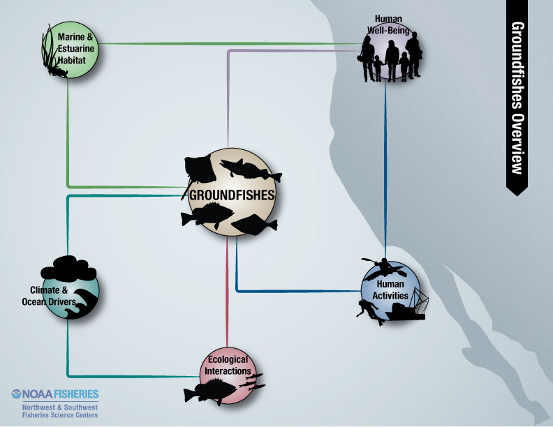
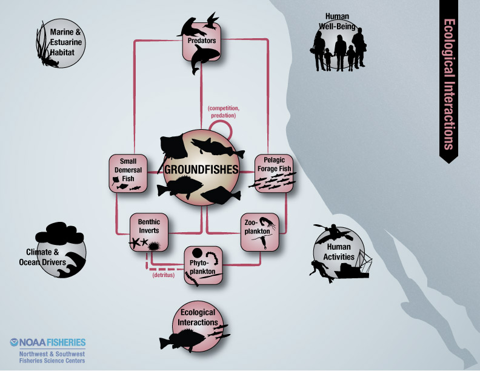

Focal Component: Groundfishes
California Current Ecosystem component

Nested conceptual model of the California Current ecosystem, centered on groundfish. The overview illustrates relationships to key environmental drivers; ecological interactions; and human activities. Please select one of the tabs listed above.
Overview
Groundfishes are generally defined, as a group, by their close association with hard structures or the ocean bottom. They are distributed from shallow habitats near shore to the very deep slope. Some of the better known members include the rockfishes (Scorpaenidae), flatfishes (Pleuronectidae and Bothidae), and sablefish (Anoplopoma fimbria).
Groundfishes constitute a large fraction of the California Current ecosystem's biomass, and their harvest provides the economic engine for coastal communities in Washington, Oregon, and California.

Ecological Interactions
California Current groundfish interact with many other species throughout their long lives. Larvae and juveniles are pelagic for months to years and feed on plankton; they are vulnerable to predators such as fishes and seabirds. Juvenile groundfish of most species eventually settle to the bottom on the continental shelf or slope; as they grow and mature, they feed on a variety of invertebrates and fishes, and are preyed upon by larger fishes and marine mammals. Competition for prey or habitat may exist within and among groundfish guilds, and many groundfish prey upon other groundfish.

Environmental Drivers
Ocean drivers are largely dependent on basin-scale forces that ultimately affect local production and the quality of the many habitat types that groundfish use over the course of their long and diverse life histories. Circulation patterns and upwelling affect patchiness of food and retention of pelagic larval and juvenile groundfish, and upwelling also promotes spring/summer production. Temperature affects metabolic rates and growth. In some areas, strong productivity may produce excess phytoplankton, which settles to the bottom and can lead to hypoxia due to high microbial respiration.

Human Activities
Groundfish support extensive, valuable commercial and recreational fisheries. Some fisheries use bottom-contact gears that may degrade groundfish habitat. Conservation measures, such as marine protected areas, precautionary fisheries management practices, and habitat restoration and enhancement efforts, are implemented to sustain groundfish populations. Groundfish survival, behavior, habitat quality and fishery opportunities may be affected by non-fishing activities related to various industrial, shipping, energy development, and land-use practices. Such activities can contribute to nutrient loading, changes in delivery of sediments, pollution, and other forms of habitat alteration.
Indicator Data

Indicators of groundfish population size (36 different species) are based on biomass estimates from stock assessments or trends in the annual trawl survey time series.
Indicators of population condition are being developed based on demographic factors (percent maturity and maximum age or size) for these same species.